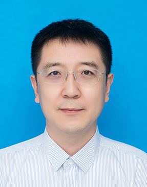

|
|
李树涛，教授，博士生导师，IEEE Fellow，国家杰出青年科学基金获得者，教育部长江学者特聘教授，国家“万人计划”科技创新领军人才，国务院政府特殊津贴专家。现任湖南大学副校长、机器人学院院长、视觉感知与人工智能湖南省重点实验室主任。连续4年入选Elsevier 中国高被引学者。担任IEEE TGRS，IEEE TIM，IF等多个国际著名期刊的编委。长期从事遥感图像处理、信息融合与模式识别等领域的研究工作，先后承担国家重点研发计划等国家和省部级课题二十余项，获国家自然科学二等奖一项（排名第一），国家科技进步二等奖二项（排名第三、五），湖南省自然科学一等奖、教育部自然科学二等奖、湖南省科技进步二等奖、湖南省教学成果一等奖各一项（均排名第一）。在国内外权威学术期刊和会议上发表论文200余篇，其中SCI收录110余篇，IEEE Transactions论文71篇，ESI 1%高被引论文23篇，ESI 1‰热点论文4篇，授权国家发明专利12项，软件著作权6 项。 |
|
|
李智勇，教授、博士生导师，现任湖南大学机器人学院常务副院长，1996年国防科学技术大学系统工程专业硕士毕业，2004年湖南大学控制理论与控制工程专业博士毕业，2006年-2007年于德国Dortmund大学计算机科学系从事博士后研究，2015年于美国麻省大学Lowell分校进行学术访问。2014年被评为湖南省普通高校“人工智能”方向学科带头人，2020年被评为湖南大学“岳麓学者”特聘教授。担任中国人工智能学会教育工委会常务委员，湖南省机器人科技教育学会常务副会长，湖南省人工智能学会常务理事/教育工委会主任。主要研究方向为多模态融合感知与自主无人系统、机器学习与行业大数据分析、数据驱动的智能优化调度、智能机器人技能学习。 |
|
|
康旭东，教授，博士生导师，IEEE Senior Member，国家级人才计划获得者，湖湘青年英才，湖南省杰出青年科学基金获得者。主要研究方向：多源图像信息融合、无人机与卫星遥感。主持国家自然科学基金项目2项，国家重点研发课题1项，获2019年度国家自然科学二等奖（排名第3），2017年度湖南省自然科学奖一等奖（排名第3），中国图象与图形学会2017 年度优秀博士学位论文与IEEE 国际地球科学与遥感大会学生最佳论文。担任IEEE TGRS(2018-2020)、IEEE GRSL、IEEE JMASS（2019-2021）、遥感学报等国内外知名期刊编委，被评为IEEE TGRS 最佳审稿人与IEEE GRSL 最佳审稿人。 |
|
刘海波，教授，博士生导师，主要从事图像测量、视觉感知与人工智能等方面的研究和教学工作。主持国家自然科学基金3项、基础加强项目子课题1项、国防973项目课题1项、探月三期专项1项、国家863课题1项、军内科研项目1项，其它课题6项；作为技术骨干承担了国家重大科学仪器设备开发专项、武器装备研制、企业委托技术开发等10余项课题的技术攻关。研究成果发表学术论文50余篇（其中SCI收录30余篇）；第一完成人授权发明专利12项、软件著作权2项，多项成果已在国防领域获得应用；获军队优秀专业技术人才岗位津贴、军队科技进步二等奖、优秀本科生指导老师等奖励。指导学生获全国大学生光电设计竞赛二等奖、全国未来飞行器设计大赛二等奖、长沙市大学生科技创新创业大赛二等奖、 “长城信息杯”竞赛一等奖、二等奖等奖励。 |
|
|
|
孙斌，副教授，博士生导师，副教授，博士生导师，湖南省优秀青年基金获得者，主要研究方向为图像处理、模式识别以及智能系统理论与应用，目前主要研究兴趣为多模态信息智能处理方法以及机器人自然交互技术。近年来，在包括IEEE TIP，TAFFC，TGRS，TIM，Science China: Information Sciences等国内外高水平学术期刊和会议上发表论文30余篇，先后主持国家自然科学基金青年项目1项，湖南省自然科学基金项目2项，国防重点项目子课题1项，作为研究骨干参与国家自然科学基金重大项目、国家重点研发和国际合作重点项目各1项，以及校企合作横向课题5项。 |
|
卢婷，副教授，博士生导师，主要从事图像处理、模式识别、人工智能及其在遥感数据分析领域的应用研究。近年来主持国家自然科学基金项目1项、湖南省自然科学基金项目2项、中央高校基本科研业务费1项、并以主研身份参与国家及省部级科研课题多项；在计算机视觉及遥感信息领域国际权威学术期刊和会议上发表论文二十余篇，其中IEEE Transactions on Geoscience and Remote Sensing、IEEE Transactions on Neural Networks and Learning Systems、IEEE Transactions on Cybernetics等汇刊论文十余篇，ESI高被引论文2篇，获湖南省高等教育教学成果二等奖1项，湖南省自然科学一等奖1项。 |
|
|
杨彬，副教授、博士生导师。主要从事图像处理、模式识别、人工智能及其在遥感数据分析、空间信息智能处理等方面的应用研究。湖南省现代农业产业技术体系智能与信息化岗位专家。近年来先后主持国家自然科学基金青年基金1项、广西重点研发项目子课题1项、湖南省自然科学基金青年基金1项、中央高校基本科研业务费1项，参与国家自然科学基金重大项目1项，科技部重点研发专项1项等。 |
|
|
|
佃仁伟，副教授，国家博士后创新人才支持计划入选者，主要从事图像融合、高光谱计算成像等领域的研究工作。主持军委科技委重点项目子课题、博士后科学基金、长沙市自然科学基金等项目。在IEEE TIP、TCYB、TNNLS、Information Fusion和CVPR等顶级期刊和会议上发表论文10余篇，其中ESI高被引论文4篇，获得2018年IEEE地球科学与遥感大会最佳学生论文提名奖，2020年中国图象图形学学会优秀博士学位论文奖。受邀担任期刊Frontiers in Remote Sensing客座编辑以及 IEEE TPAMI、IJCV、IEEE TIT、TIP、TNNLS、TCYB、TCVST、TGRS、TMM、TIM、Information fusion、IEEE/CAA Journal of Automatica Sinica（自动化学报英文版）、中国科学：信息科学等国内外知名期刊审稿人。 |
|
刘欣鑫，助理教授，硕士生导师，主要从事遥感影像处理与分析方面的研究。近年来，主持国家自然科学基金项目1项，湖南省自然科学基金青年基金1项，中央高校科研项目1项，参与国家自然科学基金多项，国防预研项目1项。曾获第23届国际摄影测量与遥感大会“青年论坛最佳论文奖”（唯一），2017年测绘科技进步奖一等奖，在国内外期刊发表学术论文多篇，获国家授权发明专利2项。 |
|
|
 |
孙俊，清华大学博士毕业后，加入富士通研究开发中心有限公司，长期从事模式识别，图像处理等方向的研究，目前担任富士通研究开发中心首席专家、人工智能和安全组研发总监、信息技术部部长。 |
|
|
韦晓辉，博士后，合作导师李树涛教授，主要从事机器学习、多源遥感图像智能处理及应用研究。近年来主持军委科技委重点项目子课题1项、国家自然科学基金项目1项、湖南省自然科学基金项目1项、博士后特别资助项目1项；在IEEE Transactions on Neural Networks and Learning Systems(SCI 一区，IF=14.255)、IEEE Transactions on Geoscience and Remote Sensing (SCI 二区，IF=8.125)等计算机视觉及遥感信息领域国际权威学术期刊和会议上发表论文十多篇；受邀担任IEEE Transactions on Neural Networks and Learning Systems、IEEE Geoscience and Remote Sensing Letters等期刊审稿人。 |
|
|
段普宏，博士后，师从康旭东和李树涛教授，主要从事高光谱遥感图像处理。目前在IEEE Transactions on Geoscience and Remote Sensing、ISPRS Journal of Photogrammetry and Remote Sensing、IEEE International Geoscience and Remote Sensing Symposium等国际遥感图像处理知名期刊与会议发表论文30余篇。攻博期间荣获湖南省优秀博士毕业生、国际地球科学与遥感大会最佳学生论文提名奖和博士研究生国家奖学金等。并受邀担任Frontiers in Remote Sensing 编委以及IEEE Transactions on Geoscience and Remote Sensing、Information Fusion和Signal Processing等期刊审稿人。 |

郭安静
2017级博士研究生
邮箱：anjing_guo@hnu.edu.cn
研究方向：高光谱融合成像

马付严
2018级博士研究生
邮箱：mafuyan@hnu.edu.cn
研究方向：图像处理，情感计算

宋启亚
2018级博士研究生
邮箱：sqyunb@hnu.edu.cn
研究方向：语音增强与识别，多模态交互信息感知
莫言
2018级博士研究生
邮箱：moyan@hnu.edu.cn
研究方向：多模态遥感图像处理
章硕
2018级博士研究生
邮箱：z_shuo@hnu.edu.cn
研究方向：多模态遥感图像处理

马子瑜
2019级博士研究生
邮箱：maziyu@hnu.edu.cn
研究方向：意图识别，情感分析，多模态视觉理解
李宾
2019级博士研究生
邮箱：libincn@hnu.edu.cn
研究方向：多模态视频理解、对话生成、人机交互
谢卓峻
2019级博士研究生
邮箱：xzj22@hnu.edu.cn
研究方向：多模态遥感图像处理
高慧玲
2019级博士研究生
邮箱：ghl@hnu.edu.cn
研究方向：多源图像配准与融合
崔治
2019级博士研究生
邮箱：zhicui@hnu.edu.cn
研究方向：多源遥感图像分类

刘锦洋
2020级博士研究生
邮箱：jinyangliu@hnu.edu.cn
研究方向：像素级多源图像融合
宋泽
2020级博士研究生
邮箱：songz@hnu.edu.cn
研究方向：隐蔽目标检测、多时相遥感变化检测
李聪妤
2020级博士研究生
邮箱：songz@hnu.edu.cn
研究方向：多源遥感图像融合与分类

胡茂青
2021级博士研究生
邮箱：humaoqing@hnu.edu.cn
研究方向：机器人视觉定位

刘旺
2021级博士研究生
邮箱：liuwa@hnu.edu.cn
研究方向：语义分割
鲁续坤
2021级博士研究生
邮箱：@hnu.edu.cn
研究方向：多源遥感图像融合与分类

李松鞠
2021级博士研究生
邮箱：lisongju@hnu.edu.cn
研究方向：多模态视频异常检测、图神经网络

郭虎
2022级博士研究生
邮箱：hu_guo@hnu.edu.cn
研究方向：多模态视频理解
丁可心
2022级博士研究生
邮箱：dingkexin@hnu.edu.cn
研究方向：高光谱与激光雷达融合分类
郭新
2022级博士研究生
邮箱：flyinggx@hnu.edu.cn
研究方向：多模态遥感图像变化检测

吴琼
2022级博士研究生
邮箱：qiongwu@hnu.edu.cn
研究方向：多模态遥感图像处理

卢伟清
2022级博士研究生
邮箱: luweiqing0924@163.com
研究方向：多模态融合图像理解，人机交互
罗元
2022级博士研究生
邮箱：luoyuan8@hnu.edu.cn
研究方向：遥感图像语义分割

鲍伟超
2022级博士研究生
邮箱：weichaobao@hnu.edu.cn
研究方向：三维重建、深度估计
李希亮
2022级博士研究生
邮箱：1005839841@qq.com
研究方向：多模态融合图像解译

秦梦溪
2022级博士研究生
邮箱：qinmengxi@hnu.edu.cn
研究方向：快照压缩成像、视频超分辨率重建

席一帆
2022级博士研究生
邮箱：15735169750@163.com
研究方向：目标检测
2020级硕士研究生：龙祖祥，王子昊，刘梦凯，李纪尔，邓彬，郭言语，谢雨欣，杨蓝，单天赐，胡上松，谢梦瑶
2021级硕士研究生：谢凯，肖凯华，吴耀航，胡宇龙
2022级硕士研究生：尹辉，谭力山，刘元晔，杨璟瑄，张晋玮，洪银涛，李梓康，杨久千，朱永向，陈鹏飞，方玉鑫，陈祥，廖美祺，司素勇，陈毅，高源，耿智霖
2022届毕业生：戴勇(鹏城)，郝乔波(中兴)，李佳豪(九江银行)，裴宇(海康)，刘家奇，白文奇，白北方(百度)，胡耀宸(百度)
2021届毕业生：宋伟伟(鹏城)，邬月(重庆邮电大学)，甘婷婷(中兴)，洪骞，常开志(华为)，黄来锋(中兴)，李东旭(国家电网)，费正瑶(华为)，孙乐(华为)
2020届毕业生：佃仁伟(湖南大学)，谢婷(湖南师范大学)，黄志鸿，李煜，尹绘洁，林韫(中兴)，操然(TP-Link)，张坤忠(中兴)，高光毫(深信服)，卓彬彬(华为)
2019届毕业生：付巍(湖南大学)，戴婷婷
2018届毕业生：黎成超，王华东，向轩琳(长沙市公务员)，华绍君，杨柳茂
2017届毕业生：卢婷(湖南大学)，欧阳颖卉，张香萍，陈香香，邵秀，张吉福，钟巧，卓海杰，黄宇帆，闫俊，王成
2016届毕业生：孙斌(湖南大学)，刘丹，胡翔宇，黄坤山，徐江辉，李登刚，肖晶，张霞
2015届毕业生：方乐缘(湖南大学)，刘海仓，陈飞，段无悔，周振，李美秀
2014届毕业生：康旭东(湖南大学)，刘微容(兰州理工)，刘国荣，郭晓强，何玲丽，杨娟
2013届毕业生：胡建文(长沙理工)，陈理，张鹏，龚大义，郭会文，刘洋，向荫，戴梅
2012届毕业生：尹海涛(南京邮电大学)，魏丹，盛先，龙剑峰，苏小清，陈雯艳，陈丽萍，张绍华，胡晨曦（出国攻读博士）
2011届毕业生：赵明(锐珂医疗)，孙邦禹，胡秋伟，陶君丽
2010届毕业生：杨斌(南华大学)，游伟，祁小燕，沈华，彭莉
2009届毕业生：谭明奎(华南理工)，赵鹏，孙凤梅，贾平
2008届毕业生：吴希贤，马杰，扶新民，廖晨
2007届毕业生：沈庆华，邓婷，邓晟初，黄良礼，王威
2006届毕业生：陈光盛，李娟
2005届毕业生：伍君，刘丽，沈谦